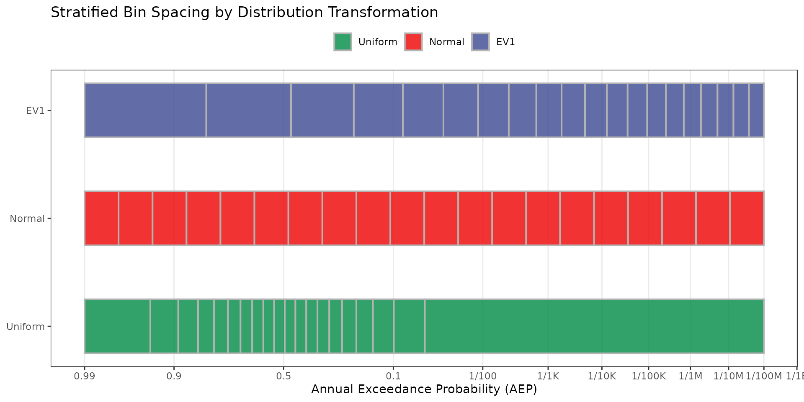
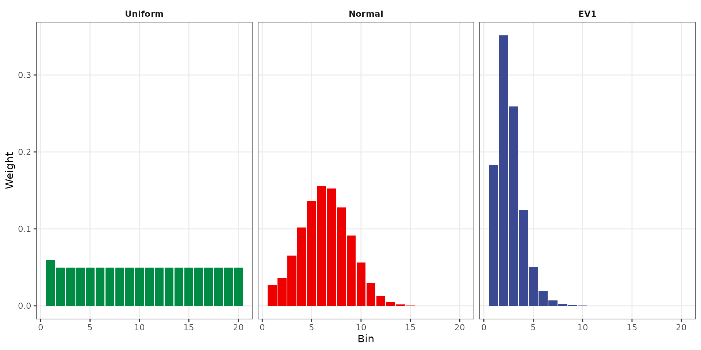

Stratified Sampling Validation
Source:vignettes/validation-stratified_sampler.Rmd
validation-stratified_sampler.RmdPurpose
Validate that stratified_sampler() correctly creates
stratified bins and weights for all three supported distribution
transformations: Extreme Value Type I (EV1), Normal, and Uniform. Tests
cover bin boundary accuracy against the stratified_example
dataset, weight accuracy, weight summation, output dimensions, and bin
ordering.
Background
Stratified sampling divides the probability space into bins to ensure adequate coverage of rare events. The choice of transformation determines how bins are distributed:
- Uniform — Equal probability width per bin.
- Normal — Uniform spacing in standard normal (z-score) space.
- EV1 (Gumbel) — Spacing in Gumbel reduced variate space.
Test 1: Bin Spacing Visualization
The following plot illustrates how each transformation distributes bin boundaries along the z-variate axis. Tick marks show the z-lower boundary of each bin. EV1 stratification produces wider spacing at common events (left) and tighter spacing at rare events (right), concentrating sampling effort where it matters most for dam safety/risk analysis.
ev1 <- stratified_sampler(dist = "EV1")
normal <- stratified_sampler(dist = "Normal")
uniform <- stratified_sampler(dist = "Uniform")
ev1 <- stratified_sampler(dist = "EV1")
normal <- stratified_sampler(dist = "Normal")
uniform <- stratified_sampler(dist = "Uniform")
# Shared x-axis range
xlim <- range(c(ev1$Zlower, ev1$Zupper,
normal$Zlower, normal$Zupper,
uniform$Zlower, uniform$Zupper))
bin_spacing <- bind_rows(
data.frame(dist = "EV1", xmin = ev1$Zlower, xmax = ev1$Zupper),
data.frame(dist = "Normal", xmin = normal$Zlower, xmax = normal$Zupper),
data.frame(dist = "Uniform", xmin = uniform$Zlower, xmax = uniform$Zupper)) |>
mutate(dist = factor(dist, levels = c("Uniform", "Normal", "EV1")))
# Plot
aep_breaks <- c(9.9e-1, 9e-1, 5e-1, 1e-1, 1e-2, 1e-3, 1e-4, 1e-5, 1e-6, 1e-7, 1e-8, 1e-9, 1e-10)
aep_labels <- c("0.99", "0.9", "0.5", "0.1", "1/100", "1/1K",
"1/10K", "1/100K", "1/1M", "1/10M", "1/100M", "1/1B", "1/10B")
zbreaks <- qnorm(1 - aep_breaks)
ggplot(bin_spacing) +
geom_rect(aes(xmin = xmin, xmax = xmax,
ymin = as.numeric(dist) - 0.25,
ymax = as.numeric(dist) + 0.25,
fill = dist),
color = "grey70", linewidth = .7, alpha = 0.8) +
scale_y_continuous(breaks = 1:3, labels = levels(bin_spacing$dist)) +
scale_x_continuous(breaks = zbreaks, labels = aep_labels)+
scale_fill_manual(values = c("Uniform" = "#008B45FF",
"Normal" = "#EE0000FF",
"EV1" = "#3B4992FF")) +
labs(x = "Annual Exceedance Probability (AEP)",
y = NULL,
title = "Stratified Bin Spacing by Distribution Transformation",
fill = NULL) +
theme_bw() +
theme(legend.position = "top",
panel.grid.minor = element_blank(),
panel.grid.major.y = element_blank())

The weight distribution shows how each transformation allocates probability across bins. Uniform produces nearly equal weights. Normal concentrates weight in central bins. EV1 places the most weight in the first few bins (frequent events) with rapidly decreasing weight for rare event bins, reflecting the heavy-tailed nature of flood distributions.
Test 2: Z-Lower Bin Boundaries Match Validation Data
Compare computed z-lower bin boundaries against the
stratified_example dataset.
ev1_idx <- which(example_stratified$distribution == "ev1")
normal_idx <- which(example_stratified$distribution == "normal")
uniform_idx <- which(example_stratified$distribution == "uniform")
# Convert validation data to z-space
z_lower_valid <- numeric(nrow(example_stratified))
z_lower_valid[uniform_idx] <- qnorm(1 - example_stratified$lower[uniform_idx])
z_lower_valid[normal_idx] <- example_stratified$lower[normal_idx]
z_lower_valid[ev1_idx] <- qnorm(exp(-exp(-example_stratified$lower[ev1_idx])))
diff_ev1 <- ev1$Zlower - z_lower_valid[ev1_idx]
diff_normal <- normal$Zlower - z_lower_valid[normal_idx]
diff_uniform <- uniform$Zlower - z_lower_valid[uniform_idx]| Distribution | Max Abs. Difference |
|---|---|
| EV1 | 9.0e-10 |
| Normal | 5.0e-10 |
| Uniform | 4.9e-09 |
Test 3: Weights Match Validation Data
Compare computed bin weights against the
stratified_example dataset.
wt_diff_ev1 <- ev1$Weights - example_stratified$weight[ev1_idx]
wt_diff_normal <- normal$Weights - example_stratified$weight[normal_idx]
wt_diff_uniform <- uniform$Weights - example_stratified$weight[uniform_idx]| Distribution | Max Abs. Difference |
|---|---|
| EV1 | 4.53e-08 |
| Normal | 3.79e-08 |
| Uniform | 5.00e-10 |
Test 4: Weights Sum to 1
| Distribution | Sum of Weights | |1 - Sum| |
|---|---|---|
| EV1 | 1 | 0 |
| Normal | 1 | 0 |
| Uniform | 1 | 0 |
Test 5: Output Dimensions
Verify that stratified_sampler() returns the correct
number of bins, events, and vector lengths.
test_custom <- stratified_sampler(Nbins = 10, Mevents = 100)
dim_results <- data.frame(
Parameter = c("Nbins", "Mevents", "length(normOrd)", "length(Zlower)",
"length(Zupper)", "length(Weights)"),
Expected = c(10, 100, 1000, 10, 10, 10),
Actual = c(test_custom$Nbins, test_custom$Mevents, length(test_custom$normOrd),
length(test_custom$Zlower), length(test_custom$Zupper), length(test_custom$Weights))
)| Parameter | Expected | Actual | Pass |
|---|---|---|---|
| Nbins | 10 | 10 | TRUE |
| Mevents | 100 | 100 | TRUE |
| length(normOrd) | 1000 | 1000 | TRUE |
| length(Zlower) | 10 | 10 | TRUE |
| length(Zupper) | 10 | 10 | TRUE |
| length(Weights) | 10 | 10 | TRUE |